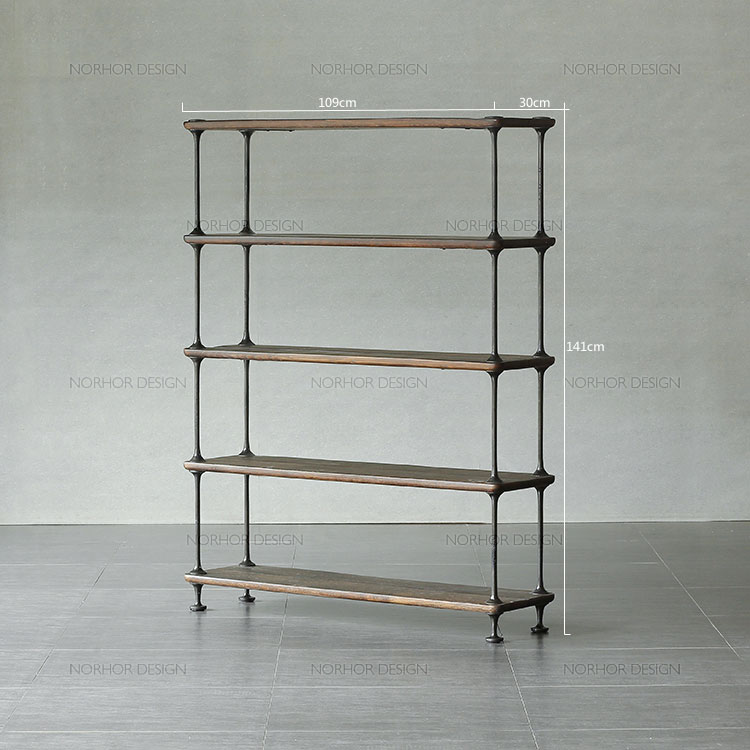

日本著名产品设计师，家用电器和日用杂物设计品牌"±0"的创始人。他曾为多家知名公司诸如苹果、爱普生进行过品牌设计，其作品在欧洲和美国赢得过几十余设计大奖。 他的设计主张是:用最少的元素(上下公差为±0)来展示产品的全部功能。 提起现代家具，不得不提意大利具有指标性的家具品牌b&b italia，在欧洲这个制造业多为家族企业的地方， 却迅速崛起了一家发展如此迅猛的家具帝国，这个成立于1966的品牌看起来有些年轻却对现代家具发展起到了功不可没的作用，据说在纽约的室内设计圈中倘若今天接到一个预算宽裕的case，设计师的当下任务就是带着业主去b&bitalia的展示间挑选家具，倘若他们脑海中浮现的一个候选名单不是这个品牌基本上这个设计师通常会认为功力有问题，其实在意大利比b&B奢华的贵的家具比比皆是，为什么他会被顶端人士爱用？今天让我们来为你介绍他的独特之处。 1966年 pietrobusnelli 说服了当时的意大利家具制造商cassina的创办人之一 cesare cassina，成立了全新的品牌 c&b italia ，到了1973年c&b的公司研发的聚氨酯在市场受到了很大的推崇，于是busnelli家族决定收购 c&bitalia的外股权，从此以后公司开始进行大规模整顿并改名为b&b italia。 B&b研发的聚氨酯是以冷凝泡棉科技射出成型的有如泡状的塑胶，并且有弹性舒适透气，又具有支撑性，还有可塑性为家具创造出新的形态，而这一材料的运用又省去木材和钢材的骨架，如此一来不但可以减轻家具重量还可以减少零部件的老化。 这是1970年初期，lebambole系列的前身
这是2007年b&b公司的推出的全新纪念版 现如今公司还会拿出的营业额作为经费研究新的产品，在意大利b&b是高品质的保证，意大利工业设计协会颁发的金圆规设计奖，b&b italia拿了四座，被视为意大利工业设计的最高荣誉，公司聘请最优秀的设计师和最顶尖的工人打造现代家具帝国。 由意大利设计师 Antonio+Citterio 設計的「Charles」系列一直是 B&B Italia 的不敗款，被粉丝追捧很多年。 来自俄罗斯圣彼得堡的W hotel 沙发全部采用的b&b 子品牌maxalto的febo系列 《Febo》座椅現在也有白、紅、黃、紫红和裸色等多种色系。 尚床网的售价46000起 最后让我们来看看国内影视帝国大鳄王中磊的新家的用了哪些b&bitalia的家具吧，沙发Tufty-time系列，椅子husk系列。 尚床网售价沙发Tufty-time系列55000起价，椅子husk22000起价。